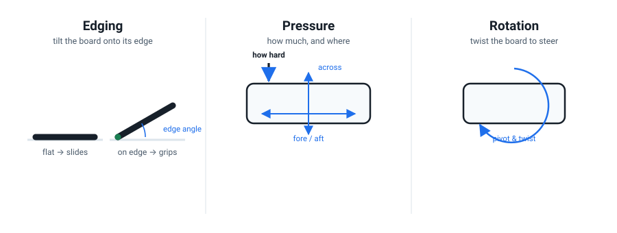
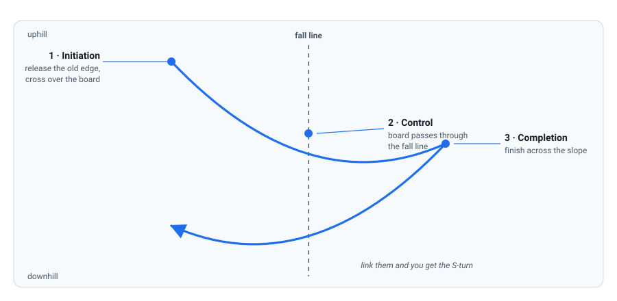

How a Snowboard Actually Turns
You can already get down a slope. But "getting down" and "turning" are different things. This lesson hands you one mental model that makes every drill that follows make sense — and tells you exactly which dial to fix when a turn goes wrong.
Why learn a model instead of just doing more runs?
You've had a few days on a board, so the problem now isn't effort — it's that you don't yet have a clear picture of what a turn is. Without one, practice just grooves whatever you happen to be doing. And a bad turn is expensive to unlearn: instructors estimate that fixing an ingrained wrong movement takes up to ten times longer than learning it right in the first place.
So before more mileage, get the model. It's cheap now and pays for itself in every session after.
Every turn is three dials
Strip away the level — a wobbly beginner skid or a pro's clean carve — and every turn is the same three controls, running at once. These are, almost word for word, the six Snowboarding Fundamentals the American Association of Snowboard Instructors trains every certified instructor against (AASI/PSIA Performance Guide). They collapse into three dials you can actually hold in your head:
| Dial | What it controls | AASI fundamentals |
|---|---|---|
| Edging | How far you tilt the board onto its edge — grip vs. slide. | Tilt (F5) |
| Pressure | How much you press into the board, and where — front/back along it, side to side across it. | Fore/aft (F1), across (F2), magnitude (F3) |
| Rotation | How you twist and steer the board with your legs and body. | Pivot (F4), twist (F6) |

Beginning to ride well is learning to run these three dials independently and then together. Every lesson from here targets one of them, then combinations.
A turn is a controlled transfer from one edge to the other, with your body moving down the hill first. Not a push. Not a swerve. A transfer.
A turn is a transfer, not a push
Here's the counter-intuitive part, and the reason beginners plateau. A turn does not start when you push your back foot around. It starts earlier, at the edge change: the moment you release the edge you're on and let your centre of mass cross over the board onto the new side. Only once you've crossed does the new edge engage and the board begin to arc.
So every turn runs through three phases:

Initiation
Release the old edge; let your body cross over the board. The edge change.
Control
The board points down the fall line for a beat. You manage the edge and pressure so the arc is yours.
Completion
The board finishes across the slope, pressure builds, you slow — and it folds straight into the next turn's initiation.
The fall line is the straightest, steepest line down the hill — where gravity pulls you. The scary moment of any turn is the instant the board passes through it, because that's where you accelerate most and where committing to the new edge matters.
The trap you're probably in
If your turns look like swinging your back leg out and skidding to a stop, you're counter-rotating — twisting your upper body one way while the board goes the other. It works at walking pace on a gentle slope, which is exactly why beginners adopt it. Then it stops working entirely: your back foot washes out, you catch edges, and anything steeper exposes the habit.
Instructor Malcolm Moore ranks it dead last of all turn drills for precisely this reason — it "will completely hamper your progression" (Turn Exercises, Ranked Worst to Best). Fixing it is the whole point of lessons 3 through 7. So don't panic when we ask you to give it up; it's the single highest-value change you can make.
The movement that replaces it — knee steering (preview)
Instead of swinging the board from the top down, you steer it from the knees: pull your front knee across over the board, and let the back knee follow a beat later. Picture two levers rising out of your boots — front lever first, back lever second. It looks like almost nothing is happening, which is the point: it's a small, precise movement, not a big swing (Malcolm Moore on knee steering).
That's a technique you'll drill later. For now, just know its name, so the lesson on rotation lands on a prepared mind.
Stand up. Imagine a line running from your toes to your heel (the board's width). Now rehearse the edge change in slow motion: shift your weight so it sits over your toes — that's your toe edge. Then let your weight drift to the middle, then over your heels — the heel edge. Notice the crossing, not the leaning. That crossing is initiation. Repeat ten times while saying the three phases out loud: initiate, control, complete.
Your teacher is right here
Anything unclear? Ask me. Confused about the difference between edging and leaning, or why an edge change matters more than foot position? That's exactly the kind of question to bring back before Lesson 2.
Check your understanding
1. What single event marks the start of every turn?
Every turn begins at the edge change — releasing the old edge and letting your centre of mass cross over the board. The nose-steering and back-foot swing are what beginners feel as the start, but they come after.
2. On which edge are your heels digging into the snow?
The heel edge runs under your heels; the toe edge under your toes. (There's no such thing as a "nose edge" — the nose is an end of the board, not a side.)
3. Which movement should you stop using to start a turn?
Swinging the back foot is counter-rotation. It'll work on a gentle slope right up until it doesn't — then it caps your progress and causes washed-out back ends and edge catches.
4. Your board is flat and you're sliding down the fall line. To grip, you must:
Edging is the grip dial. A flat board slides; tilting it further onto its edge makes it bite. That's the whole job of the edging dial — grip and brake on demand.
Diagnose these three riders
Each rider below has one dial set wrong. Read the symptom, decide which dial, then open the answer. This is retrieval practice — the effort of deciding is what makes it stick.
Rider A: "I point straight down the hill and just keep speeding up. I can't slow down."
Edging. Their board is flat. Edge angle is the brake — tilting the board onto an edge is what converts speed into grip. This rider is starving the edging dial.
Rider B: "My turns feel like I'm swatting the board sideways with my back leg, and my back end keeps sliding out."
Rotation — specifically counter-rotation. They're swinging the back foot instead of crossing over the board. The fix is knee steering (Lesson 5). The washout is the back edge failing to engage because the body never crossed.
Rider C: "My board is on edge and gripping, but I keep ending up on the wrong side of the slope."
Pressure. Grip is fine (edging works), direction is wrong — so the issue is where and how much they press into the board, especially fore/aft along its length. That's Lesson 4.
The one win from this lesson
You can now do something you couldn't an hour ago: name the three dials, say what actually starts a turn, and diagnose which of the three is failing when a turn goes wrong. That's the map. Everything ahead is filling it in.
Watch it, don't just read it
- How to Snowboard: A Beginner's Guide — Part 3 PSIA-AASI · the official body demonstrating stopping, the turn model, and the chairlift. The closest match to this lesson.
- Snowboard Turn Exercises, Ranked Worst to Best Malcolm Moore · watch the counter-rotation segment first — it shows the exact habit to drop.
- Knee Steering // Torsional Twist Explained Malcolm Moore · a preview of the movement that replaces counter-rotation (Lesson 5).

Watch the AASI/PSIA Beginner's Guide to Snowboarding, Part 3 (thesnowpros.org) — the official body showing how a beginner is taught to stop, slip, and turn. It's the authoritative version of everything above, from a certified team member.
Want the technical depth? The six fundamentals come straight from the AASI Snowboarding Fundamentals (PDF).
Snowboarding Fundamentals · lessons/0001-how-a-snowboard-turns.html